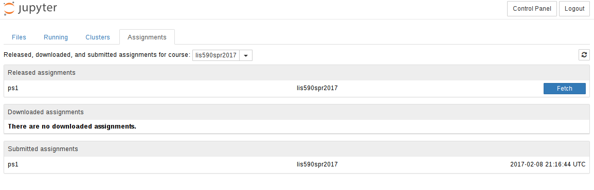
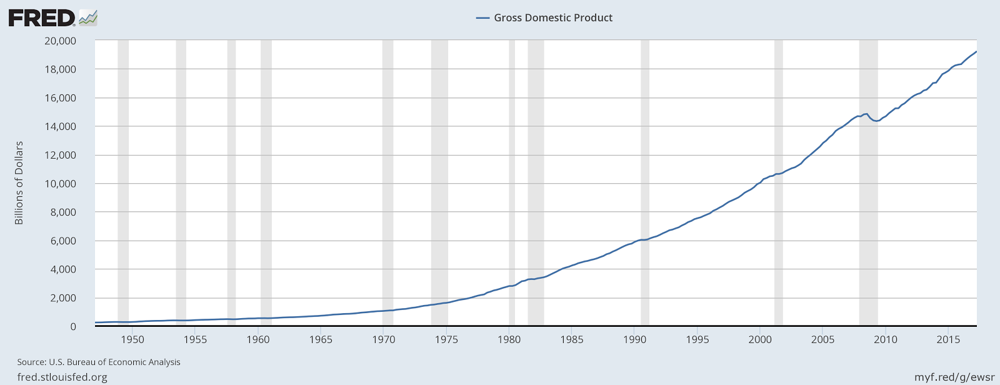

9AM-11:50PM Wednesdays, 126 iSchool
AJ Christensen - achrist3@illinois.edu</br>
Office Hours: Thursday 10am-12noon, NCSA 2019
TA Arjitha Balaji - arjitha2@illinois.edu</br>
TA Krishna Shanker Rajhan - gs10@illinois.edu
https://uiuc-ischool-dataviz.github.io/spring2019/
notes: just to give you a quick overview of my work at NCSA…
On a piece of paper:
notes: We’re going to use these pieces of data to explore how we might approach visualization. Each of these items is a different type of data – qualitative, quantitative, elements drawn from sets, and sets of numerical data.
Trying to visualize each one will give us a basic idea of how we might think about these types of data, and how we approach visualizing them.
Break into groups based on your birth month, and visualize the results by whatever method you choose: by hand, by computer, or otherwise.
notes: Don’t get used to sitting in the same seat in this room! We’re going to move around and try things, starting with hand-crafting some visualizations.
notes: This survey will help guide the level of instruction during the course. Although we will be going over many of these topics, by knowing how well you are already acquainted with them I can guide the instruction to greater or lesser detail.
notes: This is a rough syllabus! These are many of the topics we will cover, but based on how the course proceeds and how folks respond, we may shorten or lengthen different topics.
The organization here is designed to start out slow, dealing with how to program python for visualization, understanding how data is laid out, which operations we can apply to that data, and then moving on to representing data in different ways.
notes: Toward the end of class we are going to have a slightly more free-form set of discussion points. Your final projects will be somewhat open-ended, requiring more group work and collaboration than the preceding assignments.
While you are already a consumer of visualizations, your perspective should change to that of a producer of visualizations. You should be comfortable reading AND writing imagery.
notes: We will be discussing this as the semester goes on, but the principal outcome I want you to take away from this class is understanding how to transform data into its visual representation, and to take that understanding with you as you observe visualizations presented to you.
By developing visualizations, you will grow to understand the choices that influence those visualizations, and you will bring that with you while consuming information visually.
notes: This course will teach you some things about how to code, how to build visualizations, but we’re going to focus much more on learning about how to construct visualizations and why we make the choices that we do. If we choose one way to present data, does that convey information more readily? Or does it get in the way of the underlying meaning?
You will each be assigned to a group to do collective note-taking. The day before class each week, you will be notified that you will be taking notes the next day and you will be provided the link to a collaborative document. Following the lecture, your notes will be added to the course website.
notes: This structure will likely be deviated from during the course, but in general we will start with lecture, take a break, then continue with collaborative or hands-on exercises using group coding.
During the group coding, I might lead the class in some visualization in Python, Javascript, or something else. During this section, I expect that students will follow along with what is going on – typing in the specific commands, and maybe even trying different things as we go. It is not meant to simply be a “performance” of coding, but instead an opportunity to learn.
notes: Your weekly assignments will take different forms. The first assignment will be exclusively prose and hand-writing, but subsequent assignments will be either notebook (coding) based or prose-based as well.
The final project will be described later in class, but will take the form of a group project that touches on coding as well as visual design.
notes: When programming, I expect that you will do things like search on the internet to find help with a given problem. This is fine.
But, you must cite where any code snippets came from. And you must note if you are working with other people in the group!
Using snippets of code is fine – but you may not copy large-scale amounts of code from other work (for example, other visualizations) and pass it off as your own. Always cite, and be reasonable in what you utilize.
notes: You will be expected to write code in Python, and to learn the very basics of Javascript. Your projects may be turned in via git. We will also utilize Slack for class communication.
notes: Jupyterhub is a software system for launching multiple independent notebooks that can share access to data and installed software. Ours is administered by the iSchool.
nbgrader/home/shared/spr18-is590dv/data//home/shared/spr18-is590dv/fall2018/notes: It is possible that your JupyterHub instance may be lost – don’t store mission critical data there without a backup. It should be possible to share data between people on the system, but I won’t pretend to know the right way to do that.

lis590dv-spring2019.slack.com
#general : General announcements#assignments : Help with assignments#help : General help with Python, Javascript, visualization, etc#lectures : During lectures, post links, comments, questions here@ sign appropriately: @[person], @here, @channelnotes: Please use slack as much as you need! You can use it to share items and articles with the class, to collaborate, to discuss and ask questions and get feedback. However, please do behave in a professional fashion.
shared/sp18-is590dv/spring2019notes: All the materials for this course will be stored in github, and are available under a very permissive license. It is largely written in markdown and automatically compiled to web pages when changes are made.
You are invited to clone the repo, fork and submit changes (typos, etc!), and to use any information in it in the future.
notes: We’re going to start out at a very high-level, discussing why we choose to visualize versus other types of representation, what types of data, and how we might do it.
(Or rather, why wouldn’t we visualize?)
notes: Not everything suits itself to visualization – and part of the reason for that is the necessary reductionism that visualization can require.
notes: The previous instructor of this course left me with this example of one thing not suited to visualization…
notes: Human perception is biased by the tools we have to work with - our senses and our minds.
Visual information is communicated through our eyes, which have limitations. At the most basic level, we can see a range of about 210 degrees horizontally with one or both eyes. The region that is covered by both (“binocular”) is about 114 degrees in extent.
You can only cram so much information into the human eye.

By Vanessa Ezekowitz CC BY-SA 3.0, via Wikimedia Commons
notes: When we think about visual communication of information, we must think about how human physiology interacts with those visuals.
Also, fair warning: I’m not a medical doctor.
This diagram shows the visual acuity of a “standard” human eye, as a function of angular distance from the fovea. We have to think about this in conjunction with our field of view.
notes: (This part is a bit of a stunt. Sorry.)
Read these numbers aloud:
| 2007-01-01 | 14233.2 |
| 2007-04-01 | 14422.3 |
| 2007-07-01 | 14569.7 |
| 2007-10-01 | 14685.3 |
| 2008-01-01 | 14668.4 |
| 2008-04-01 | 14813.0 |
| 2008-07-01 | 14843.0 |
| 2008-10-01 | 14549.9 |
| 2009-01-01 | 14383.9 |
notes: Everyone close your eyes while they read. See what I mean? It’s a stunt.
Your ears are not as good at processing large amounts of information as your eyes.

notes: You might immediately notice a few things about this image, but one item that we will talk about as class goes on is that often visualizations can have a consistent style. Often this can be associated with a professional brand identity. FRED in particular has a “branding” that is quite obvious, even without the logo.
notes: Whenever you build a visualization you need to think about the context that you can assume on the part of your viewer. For instance, in my work at the NCSA, we focus on outreach to the public, which might include children, or politicians, OR expert scientists, so our visualizations have to be fairly approachable and movie-like. But some of my visualization colleagues at the NCSA work specifically with scientists, and their visualizations might be highly complex with lots of annotation and specific numerical values.
“Visualizing data” is not a strict subset of “making an image.”
notes: Much of the visualization process is data processing, which is less subjective than a lot of image making.
notes: We will approach visualization as a multi-stage process of data collection, organization and representation.
We tell lies to visualize, but we must be honest.
2 out of 3 “points”

Our choices must be:
Mark Newman of the University of Michigan has created visualizations of the election maps from several of the most recent elections. For more information and context, see his page http://www-personal.umich.edu/~mejn/election/2008/ .
{kind=link}
{kind=link}
{kind=link}
{kind=link}
{kind=link}